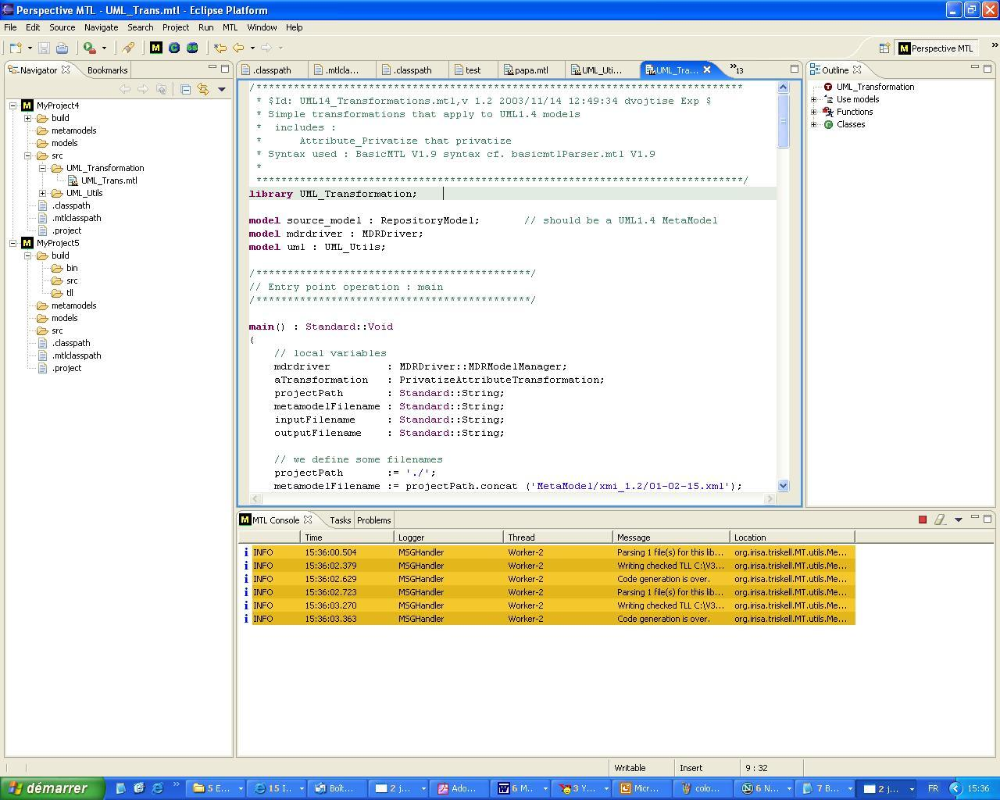

Getting Started: Eclipse and MTL Plugin |
The Eclipse user interface is divided into windows, perspectives and
views.
|  |
| Figure 1: MTL For Eclipse User
Interface |
The Navigator view shows your project and your files, etc., collectively called resources. Except for the project entry at the outermost level, the Navigator view is basically a file view that reflects the organization of the project folder. When you double-click on a file in the Navigator, it is opened in an editor. If the file extension is associated with an internal editor (see Window → Preferences → Workbench → File Associations), it will show up in the Editor view. Otherwise, it will be opened in an external editor, i.e., another program. You can select from among the possible editors to open a given file by right-clicking on the file and choosing Open With. By default, MTL files will be open by the MTL Editor.
The MTL editor view allows you to modify your documents.
The Tasks view shows validation errors, which are also indicated by error or informative icons in the left margin of the editor view. The error message appears in the Tasks view and as hover help (wave the mouse cursor over the icon) in the editor margin. Double-clicking on a line in the Tasks view takes you to that line in the Editor view, opening the file, if necessary.
The console view shows validation errors, which are also indicated
by
error or informative icons in
the left margin of the editor view. The error message appears in the
consoel view